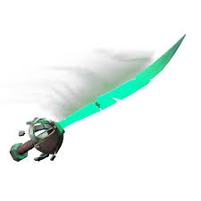
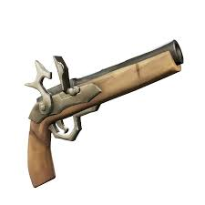
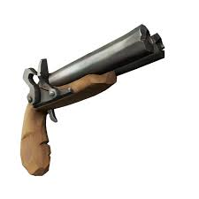
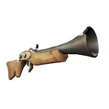
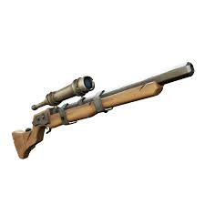
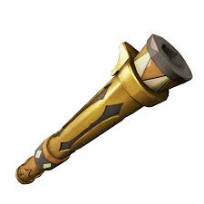
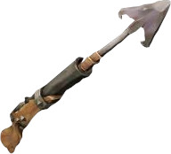

Cutlass aka Kard
Egy olyan fegyer amelyet a kezdő matrózok használnak. Erőssége a gyors támadások és a hosszú "Lunge" amely egy hosszú ugrást takar.
Tanulj a Sea of Thieves fegyverekről és azok képességeikről!
Irány a fegyvertárLesz szó a halálos és rohadt idegesito kardról, a veszélyes távolsági fegyverekről.

Egy olyan fegyer amelyet a kezdő matrózok használnak. Erőssége a gyors támadások és a hosszú "Lunge" amely egy hosszú ugrást takar.

Egy olyan fegyverről beszélünk ami nem is messze és nem is közel harcban tökéletesedik ki hanem közepes távolságban.

Gyorsan lő 2 acél golyót az ellenfélbe, nagyon hatásos fegyver.

Nagyon halk és hatásos. Képes kettő dobásból elintézni egy kalózt.

Erőssége a közelharc, képes egy lövésből elintézni bárkit.

Hosszú távolságú harcokban van specializálódva.

Egy elég különös választás harcokhoz és mégis hatékony. Ennek a fegyvernek van többféle lövedéke, mindegyik más és más.

Mozgásra van kitalálva. Ha használod sokkal könnyebb lesz közlekedni
Mindegyik fegyver más és más és sok időbe telik elsajátítani.